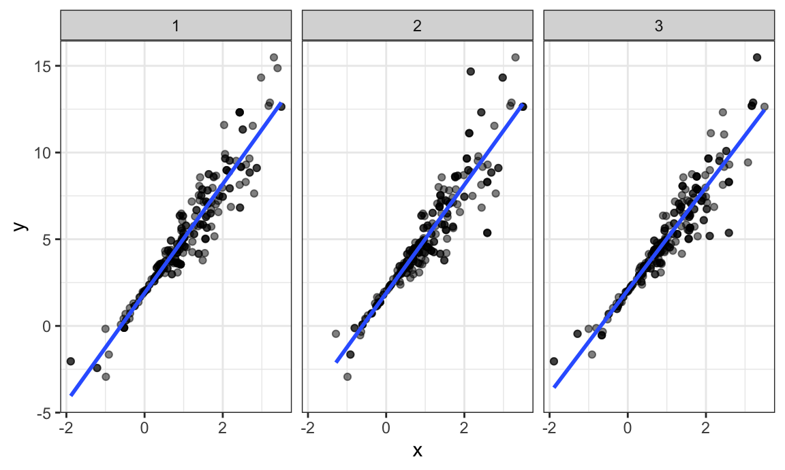
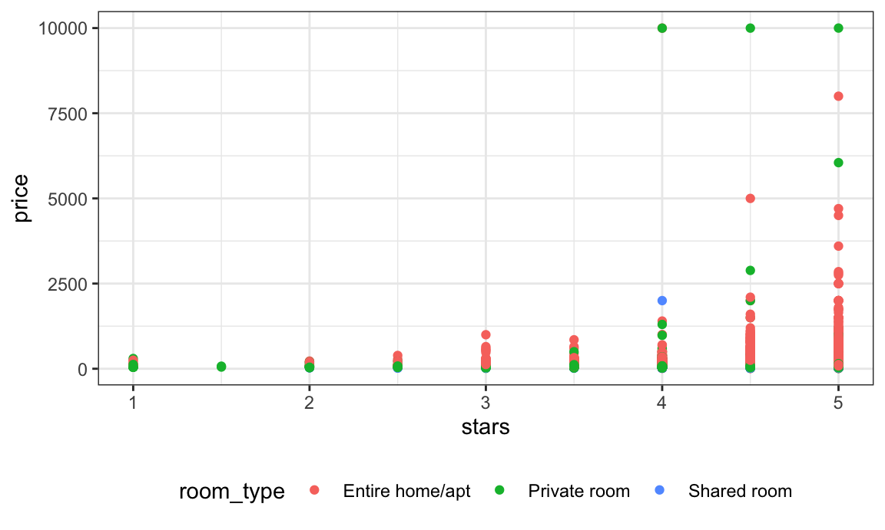

Bootstrapping
Bootstrapping is a popular resampling-based approach to statistical inference, and is helpful when usual statistical methods are intractable or inappropriate. The idea is to draw repeated samples from your original sample with replacement, thereby approximating the repeated sampling framework. Using list columns to store bootstrap samples is natural and provides a “tidy” approach to resampling-based inference.
This is the third module in the Linear Models topic; the relevant slack channel is here.
## ── Attaching packages ───────────────────────────────────────────────────────── tidyverse 1.2.1 ──## ✔ ggplot2 3.0.0 ✔ purrr 0.2.5
## ✔ tibble 1.4.2 ✔ dplyr 0.7.6
## ✔ tidyr 0.8.1 ✔ stringr 1.3.1
## ✔ readr 1.1.1 ✔ forcats 0.3.0## ── Conflicts ──────────────────────────────────────────────────────────── tidyverse_conflicts() ──
## ✖ dplyr::filter() masks stats::filter()
## ✖ dplyr::lag() masks stats::lag()Example
I’ll write code for today’s content in a new R Markdown document called bootstrapping.Rmd in the linear_models directory / repo. The code chunk below loads usual packages and sets a seed for reproducibility.
library(tidyverse)
library(p8105.datasets)
set.seed(1)Bootstrapping
Bootstrapping is based on the idea of repeated sampling which underlies most approaches to statistical inference. Traditionally, the distribution of a sample statistic (sample mean, SLR coefficients, etc.) for repeated, random draws from a population has been established theoretically. These theoretical distributions make some assumptions about the underlying population from which samples are drawn, or depend on large sample sizes for asymptotic results.
In cases where the assumptions aren’t met, or sample sizes aren’t large enough for asymptotics to kick in, it is still necessary to make inferences using the sample statistic. In these cases, drawing repeatedly from the original population would be great – one could simple draw a lot of samples and look at the empirical (rather than theoretical) distribution. But, as we said in iteration and simulation, repeated sampling just doesn’t happen in the real world.
Repeated sampling can happen on a computer though. To bootstrap, one draws repeated samples (with the same sample size) from the original sample with replacement to mimic the process of drawing repeated samples from the population. The bootstrap samples will differ from the original sample, and the sample statistic of interest (sample mean, SLR coefficients, etc.) can be computed for each bootstrap sample. Looking at the distribution of the statistic across samples gives a sense of the uncertainty in the estimate.
Bootstrapping in SLR
Let’s create some simulated data. First I’ll generate x, then an error sampled from a normal distribution, and then a response y; this all gets stored in sim_df_const. Then I’ll modify this by multiplying the errors by a term that involves x, and create a new response variable y.
n_samp = 250
sim_df_const =
tibble(
x = rnorm(n_samp, 1, 1),
error = rnorm(n_samp, 0, 1),
y = 2 + 3 * x + error
)
sim_df_nonconst = sim_df_const %>%
mutate(
error = error * .75 * x,
y = 2 + 3 * x + error
)By generating data in this way, I’m creating one case in which the usual linear regression assumptions hold and one case in which they don’t. The plot below illustrates the differences between the dataset.
sim_df =
bind_rows(const = sim_df_const, nonconst = sim_df_nonconst, .id = "data_source")
sim_df %>%
ggplot(aes(x = x, y = y)) +
geom_point(alpha = .5) +
stat_smooth(method = "lm") +
facet_grid(~data_source) These datasets have roughly the same overall variance, but the left panel shows data with constant variance and the right panel shows data with non-constant variance. For this reason, ordinary least squares should provide reasonable estimates in both cases, but inference is standard inference approaches may only be justified for the data on the left.
The output below shows results from fitting simple linear regressions to both datasets.
lm(y ~ x, data = sim_df_const) %>%
broom::tidy() %>%
knitr::kable(digits = 3)| term | estimate | std.error | statistic | p.value |
|---|---|---|---|---|
| (Intercept) | 1.977 | 0.098 | 20.157 | 0 |
| x | 3.045 | 0.070 | 43.537 | 0 |
lm(y ~ x, data = sim_df_nonconst) %>%
broom::tidy() %>%
knitr::kable(digits = 3)| term | estimate | std.error | statistic | p.value |
|---|---|---|---|---|
| (Intercept) | 1.934 | 0.105 | 18.456 | 0 |
| x | 3.112 | 0.075 | 41.661 | 0 |
Despite the very different error structures, standard errors for coefficient estimates are similar in both cases!
We’ll use the bootstrap to make inference for the data on the right. This is intended largely as an illustration for how to use the bootstrap in cases where the theoretical distribution is “unknown”, although for these data in particular weighted least squares could be more appropriate.
Drawing one bootstrap sample
Let’s write a quick function to generate our bootstrap samples. This function should have the data frame as the argument, and should return a sample from that dataframe drawn with replacement.
boot_sample = function(df) {
sample_frac(df, replace = TRUE)
}We should also do a quick check to see if this is working.
boot_sample(sim_df_nonconst) %>%
ggplot(aes(x = x, y = y)) +
geom_point(alpha = .5) +
stat_smooth(method = "lm")That looks about right. In comparison with the original data, the bootstrap sample has the same characteristics but isn’t a perfect duplicate – some original data points appear more than once, others don’t appear at all.
Drawing many bootstrap samples
We’re going to draw repeated samples with replacement, and then analyze each of those samples separately. It would be really great to have a data structure that makes it possible to keep track of everything. Maybe a list column??!
Let’s give that a try:
boot_straps = data_frame(
strap_number = 1:1000,
strap_sample = rerun(1000, boot_sample(sim_df_nonconst))
)
boot_straps
## # A tibble: 1,000 x 2
## strap_number strap_sample
## <int> <list>
## 1 1 <tibble [250 × 3]>
## 2 2 <tibble [250 × 3]>
## 3 3 <tibble [250 × 3]>
## 4 4 <tibble [250 × 3]>
## 5 5 <tibble [250 × 3]>
## 6 6 <tibble [250 × 3]>
## 7 7 <tibble [250 × 3]>
## 8 8 <tibble [250 × 3]>
## 9 9 <tibble [250 × 3]>
## 10 10 <tibble [250 × 3]>
## # ... with 990 more rowsWe can do a few of quick checks to make sure this has worked as intended. First we’ll look at a couple of bootstrap samples.
boot_straps %>%
filter(strap_number %in% 1:2) %>%
mutate(strap_sample = map(strap_sample, ~arrange(.x, x))) %>%
pull(strap_sample)
## [[1]]
## # A tibble: 250 x 3
## x error y
## <dbl> <dbl> <dbl>
## 1 -1.21 -0.781 -2.43
## 2 -0.914 -0.908 -1.65
## 3 -0.914 -0.908 -1.65
## 4 -0.733 0.447 0.248
## 5 -0.733 0.447 0.248
## 6 -0.733 0.447 0.248
## 7 -0.733 0.447 0.248
## 8 -0.641 -0.416 -0.338
## 9 -0.606 -0.106 0.0774
## 10 -0.536 0.0227 0.413
## # ... with 240 more rows
##
## [[2]]
## # A tibble: 250 x 3
## x error y
## <dbl> <dbl> <dbl>
## 1 -1.29 1.40 -0.454
## 2 -0.989 -1.97 -2.93
## 3 -0.914 -0.908 -1.65
## 4 -0.805 0.292 -0.123
## 5 -0.733 0.447 0.248
## 6 -0.733 0.447 0.248
## 7 -0.733 0.447 0.248
## 8 -0.665 -0.544 -0.539
## 9 -0.536 0.0227 0.413
## 10 -0.536 0.0227 0.413
## # ... with 240 more rowsSeems okay – some values are repeated, some don’t appear in both datasets. Next I’ll use ggplot to show some of these datasets, and to include a linear fit for each.
boot_straps %>%
filter(strap_number %in% 1:3) %>%
unnest() %>%
ggplot(aes(x = x, y = y)) +
geom_point(alpha = .5) +
stat_smooth(method = "lm", se = FALSE) +
facet_grid(~strap_number) 
This shows some of the differences across bootstrap samples, and shows that the fitted regression lines aren’t the same for every bootstrap sample.
Analyzing bootstrap samples
My goal, of course, isn’t to analyze bootstrap samples by plotting them – I’d like to get a sense of the variability in estimated intercepts and slopes across all my bootstrap samples.
To do that, I’ll use the analytic pipeline we established when looking at nested datasets in linear models: fit the model; tidy the output; unnest and examine the results. The code chunk below uses this pipeline to look at bootstrap standard errors for the estimated regression coefficients.
bootstrap_results =
boot_straps %>%
mutate(models = map(strap_sample, ~lm(y ~ x, data = .x) ),
results = map(models, broom::tidy)) %>%
select(-strap_sample, -models) %>%
unnest() %>%
group_by(term) %>%
summarize(boot_se = sd(estimate))
bootstrap_results %>%
knitr::kable(digits = 3)| term | boot_se |
|---|---|
| (Intercept) | 0.077 |
| x | 0.106 |
Comparing these to the results of ordinary least squares, the standard error for the intercept is much smaller and the standard error for the intercept is a bit larger. This is reasonable, given the non-constant variance in the data given smaller residuals around zero and larger residuals in the the tails of the x distribution.
For a simple linear regression, we can show the fitted lines for each bootstrap sample to build intuition for these results.
boot_straps %>%
unnest() %>%
ggplot(aes(x = x, y = y)) +
geom_line(aes(group = strap_number), stat = "smooth", method = "lm", se = FALSE, alpha = .1, color = "blue") +
geom_point(data = sim_df_nonconst, alpha = .5)In comparison to the standard error bands in our previous plot (which are based on OLS), the distribution of regression lines is narrower near \(x = 0\) and wider at the ends of the \(x\) distribution.
bootstrap
Bootstrapping is common enough that it’s been automated, to some degree, in the modelr::boostrap function. This function makes it easy to draw bootstrap samples, and stores them in a mostly-helpful way – as a resample object that can be converted to and treated like a data frame. (This keeps you from having to actually store 1000 dataframes, and saves a lot of memory on your computer.)
boot_straps =
sim_df_nonconst %>%
modelr::bootstrap(n = 1000)
boot_straps$strap[[1]]
## <resample [250 x 3]> 228, 50, 145, 2, 208, 160, 25, 179, 149, 11, ...
as_data_frame(boot_straps$strap[[1]])
## # A tibble: 250 x 3
## x error y
## <dbl> <dbl> <dbl>
## 1 -0.606 -0.106 0.0774
## 2 1.88 -0.431 7.21
## 3 -0.116 0.00958 1.66
## 4 1.18 0.361 5.91
## 5 1.54 -2.43 4.20
## 6 2.87 -1.50 9.11
## 7 1.62 0.190 7.05
## 8 2.03 -0.975 7.11
## 9 -0.286 0.154 1.29
## 10 2.51 1.79 11.3
## # ... with 240 more rowsLet’s repeat our analysis pipeline using the bootstrap function instead of our own process for drawing samples with replacement.
sim_df_nonconst %>%
modelr::bootstrap(n = 1000) %>%
mutate(models = map(strap, ~lm(y ~ x, data = .x) ),
results = map(models, broom::tidy)) %>%
select(-strap, -models) %>%
unnest() %>%
group_by(term) %>%
summarize(boot_se = sd(estimate))
## # A tibble: 2 x 2
## term boot_se
## <chr> <dbl>
## 1 (Intercept) 0.0744
## 2 x 0.101The results are the same (up to resampling variability), and the code to get here is pretty clean.
Also, check this out – to bootstrap the dataset with constant error variance, we only have to change the input dataframe!
sim_df_const %>%
modelr::bootstrap(n = 1000) %>%
mutate(models = map(strap, ~lm(y ~ x, data = .x) ),
results = map(models, broom::tidy)) %>%
select(-strap, -models) %>%
unnest() %>%
group_by(term) %>%
summarize(boot_se = sd(estimate))
## # A tibble: 2 x 2
## term boot_se
## <chr> <dbl>
## 1 (Intercept) 0.0968
## 2 x 0.0674These results generally agree with the output of the OLS procedure, which is nice.
Non-standard parameters
The boostrap is also helpful when you’d like to construct a confidence interval for a parameter / value / summary that doesn’t have an easy-to-write-down distribution in the usual repeated sampling framework. In the following, we’ll look at the distribution of \(\hat{r}^2\) and \(\log(\beta_0 * \beta1)\) in a simple linear regression.
First, we’ll generate data. This is similar to the constant-variance dataset we saw previously, but contains a sample of size 25.
sim_df =
tibble(
x = rnorm(25, 1, 1),
error = rnorm(25, 0, 1),
y = 2 + 3 * x + error
)To obtain a distribution for \(\hat{r}^2\), we’ll follow basically the same procedure we used for regression coefficients: draw bootstrap samples; the a model to each; extract the value I’m concerned with; and summarize. Here, we’ll use modelr::bootstrap to draw the samples and broom::glance to produce r.squared values.
sim_df %>%
modelr::bootstrap(n = 1000) %>%
mutate(models = map(strap, ~lm(y ~ x, data = .x) ),
results = map(models, broom::glance)) %>%
select(-strap, -models) %>%
unnest() %>%
ggplot(aes(x = r.squared)) + geom_density()
In this example, the \(\hat{r}^2\) value is high, and the upper bound at 1 may be a cause for the generally skewed shape of the distribution. If we wanted to construct a confidence interval for \(R^2\), we could take the 2.5% and 97.5% quantiles of the estimates across bootstrap samples. However, because the shape isn’t symmetric, using the mean +/- 1.96 times the standard error probably wouldn’t work well.
We can produce a distribution for \(\log(\beta_0 * \beta1)\) using a similar approach, with a bit more wrangling before we make our plot.
sim_df %>%
modelr::bootstrap(n = 1000) %>%
mutate(models = map(strap, ~lm(y ~ x, data = .x) ),
results = map(models, broom::tidy)) %>%
select(-strap, -models) %>%
unnest() %>%
select(id = `.id`, term, estimate) %>%
spread(key = term, value = estimate) %>%
rename(beta0 = `(Intercept)`, beta1 = x) %>%
mutate(log_b0b1 = (beta0 * beta1)) %>%
ggplot(aes(x = log_b0b1)) + geom_density()As with \(r^2\), this distrubtion is somewhat skewed and has some outliers.
The point of this is not to say you should always use the bootstrap – it’s possible to establish “large sample” distributions for strange parameters / values / summaries in a lot of cases, and those are great to hvae. But it is helpful to know that there’s a way to do inference even in tough cases.
Airbnb data
As a final example, we’ll revisit the Airbnb data. The code chunk below loads and tidies the data.
data("nyc_airbnb")
nyc_airbnb =
nyc_airbnb %>%
mutate(stars = review_scores_location / 2) %>%
rename(boro = neighbourhood_group,
neighborhood = neighbourhood) %>%
filter(boro != "Staten Island") %>%
select(price, stars, boro, neighborhood, room_type)In linear models, we noticed that some large outliers in price might affect estimates and inference for the association between star rating and price. Although estimates are likely to be sensitive to those outliers, the code chunk below uses the bootstrap to examine the distribution of regression coefficients under repeated sampling.
nyc_airbnb %>%
filter(boro == "Manhattan") %>%
modelr::bootstrap(n = 1000) %>%
mutate(models = map(strap, ~ lm(price ~ stars + room_type, data = .x)),
results = map(models, broom::tidy)) %>%
select(results) %>%
unnest() %>%
filter(term == "stars") %>%
ggplot(aes(x = estimate)) + geom_density()
This distribution has a heavy tail extending to low values and a bit of a “shoulder”, features that may be related to the frequency with which large outliers are included in the bootstrap sample.
Other materials
List columns take some getting used to; there are some materials to help with that.
- R for Data Science has a chapter on fitting many models
- Jenny Bryan’s purrr tutorial has useful list-column examples
Boostrapping and resampling are also new concepts; the materials below explore these using tidyverse approaches.
- The
modelrpackage has a page - The bootsrapping vignette uses a framework similar to the one we used
The code that I produced working examples in lecture is here.